import pandas as pd
# Display all columns
pd.set_option('display.max_columns', None)
# Display all outputs from each cell
from IPython.core.interactiveshell import InteractiveShell
InteractiveShell.ast_node_interactivity = "all"Walkthroughs and Exercises for Machine Learning for Data Analytics with Python
Intro: Getting Started with Machine Learning for Data-Driven Decisions
Walkthrough #1: Setting Up the Python Environment for ML
If you haven’t already installed Python, Jupyter, and the necessary packages, there are instructions on the course repo in the README to do so here.
You can also install the packages directly in a Jupyter notebook with
!pip install pandas seaborn matplotlib scikit-learn mlxtendIf you aren’t able to do this on your machine, you may want to check out Google Colab. It’s a free service that allows you to run Jupyter notebooks in the cloud. Alternatively, I’ve set up some temporary notebooks on Binder here that you can work with online as well.
Run the following code to check that each of the needed packages are installed. If you get an error, you may need to install the package(s) again.
import pandas as pd
import seaborn as sns
import matplotlib.pyplot as plt
from sklearn.model_selection import train_test_split
from sklearn.preprocessing import StandardScaler
from sklearn.linear_model import LinearRegression
from sklearn.metrics import mean_absolute_error, r2_score
from sklearn.ensemble import RandomForestClassifier
from sklearn.metrics import accuracy_score, precision_score, recall_score, confusion_matrix
from sklearn.cluster import KMeans
from sklearn.metrics import silhouette_score
from mlxtend.frequent_patterns import apriori, association_rules
from sklearn.linear_model import LogisticRegression
from sklearn.model_selection import cross_val_score, cross_validate
from sklearn.model_selection import GridSearchCV# Load dataset
telco_churn_raw = pd.read_csv('telco-customer-churn.csv')Exercise #1: Setting Up the Python Environment
By completing this exercise, you will be able to
- Import necessary Python packages
- Check for successful package loading
- Load datasets into Python
Follow the instructions above in Walkthrough #1 to check for correct installation of necessary packages.
# Load dataset
marketing_campaign_raw = pd.read_csv('marketing_campaign.csv')Module 1: Data Understanding and Preprocessing for Machine Learning
Walkthrough #2: Exploring and Preprocessing Data with Pandas & Seaborn
Inspect a dataset using Pandas
# Inspect data structure
telco_churn_raw
telco_churn_raw.info()| customerID | gender | SeniorCitizen | Partner | Dependents | tenure | PhoneService | MultipleLines | InternetService | OnlineSecurity | OnlineBackup | DeviceProtection | TechSupport | StreamingTV | StreamingMovies | Contract | PaperlessBilling | PaymentMethod | MonthlyCharges | TotalCharges | ServiceCount | InternetScore | AvgServiceUsageScore | Churn | |
|---|---|---|---|---|---|---|---|---|---|---|---|---|---|---|---|---|---|---|---|---|---|---|---|---|
| 0 | 7590-VHVEG | Female | 0 | Yes | No | 1 | 0 | No phone service | DSL | 0 | 1 | 0 | 0 | 0 | 0 | Month-to-month | Yes | Electronic check | 29.85 | 29.85 | 1 | 20 | 6.651318 | No |
| 1 | 5575-GNVDE | Male | 0 | No | No | 34 | 1 | No | DSL | 1 | 0 | 1 | 0 | 0 | 0 | One year | No | Mailed check | 56.95 | 1889.5 | 3 | 20 | 12.794164 | No |
| 2 | 3668-QPYBK | Male | 0 | No | No | 2 | 1 | No | DSL | 1 | 1 | 0 | 0 | 0 | 0 | Month-to-month | Yes | Mailed check | 53.85 | 108.15 | 3 | 20 | 15.077513 | Yes |
| 3 | 7795-CFOCW | Male | 0 | No | No | 45 | 0 | No phone service | DSL | 1 | 0 | 1 | 1 | 0 | 0 | One year | No | Bank transfer (automatic) | 42.30 | 1840.75 | 3 | 20 | 17.299583 | No |
| 4 | 9237-HQITU | Female | 0 | No | No | 2 | 1 | No | Fiber optic | 0 | 0 | 0 | 0 | 0 | 0 | Month-to-month | Yes | Electronic check | 70.70 | 151.65 | 1 | 40 | 18.222739 | Yes |
| ... | ... | ... | ... | ... | ... | ... | ... | ... | ... | ... | ... | ... | ... | ... | ... | ... | ... | ... | ... | ... | ... | ... | ... | ... |
| 7038 | 6840-RESVB | Male | 0 | Yes | Yes | 24 | 1 | Yes | DSL | 1 | 0 | 1 | 1 | 1 | 1 | One year | Yes | Mailed check | 84.80 | 1990.5 | 6 | 20 | 24.677222 | No |
| 7039 | 2234-XADUH | Female | 0 | Yes | Yes | 72 | 1 | Yes | Fiber optic | 0 | 1 | 1 | 0 | 1 | 1 | One year | Yes | Credit card (automatic) | 103.20 | 7362.9 | 5 | 40 | 24.195642 | No |
| 7040 | 4801-JZAZL | Female | 0 | Yes | Yes | 11 | 0 | No phone service | DSL | 1 | 0 | 0 | 0 | 0 | 0 | Month-to-month | Yes | Electronic check | 29.60 | 346.45 | 1 | 20 | NaN | No |
| 7041 | 8361-LTMKD | Male | 1 | Yes | No | 4 | 1 | Yes | Fiber optic | 0 | 0 | 0 | 0 | 0 | 0 | Month-to-month | Yes | Mailed check | 74.40 | 306.6 | 1 | 40 | 15.461278 | Yes |
| 7042 | 3186-AJIEK | Male | 0 | No | No | 66 | 1 | No | Fiber optic | 1 | 0 | 1 | 1 | 1 | 1 | Two year | Yes | Bank transfer (automatic) | 105.65 | 6844.5 | 6 | 40 | 33.009487 | No |
7043 rows × 24 columns
<class 'pandas.DataFrame'>
RangeIndex: 7043 entries, 0 to 7042
Data columns (total 24 columns):
# Column Non-Null Count Dtype
--- ------ -------------- -----
0 customerID 7043 non-null str
1 gender 7043 non-null str
2 SeniorCitizen 7043 non-null int64
3 Partner 7043 non-null str
4 Dependents 7043 non-null str
5 tenure 7043 non-null int64
6 PhoneService 7043 non-null int64
7 MultipleLines 7043 non-null str
8 InternetService 7043 non-null str
9 OnlineSecurity 7043 non-null int64
10 OnlineBackup 7043 non-null int64
11 DeviceProtection 7043 non-null int64
12 TechSupport 7043 non-null int64
13 StreamingTV 7043 non-null int64
14 StreamingMovies 7043 non-null int64
15 Contract 7043 non-null str
16 PaperlessBilling 7043 non-null str
17 PaymentMethod 7043 non-null str
18 MonthlyCharges 6621 non-null float64
19 TotalCharges 7043 non-null str
20 ServiceCount 7043 non-null int64
21 InternetScore 7043 non-null int64
22 AvgServiceUsageScore 6424 non-null float64
23 Churn 7043 non-null str
dtypes: float64(2), int64(11), str(11)
memory usage: 1.3 MB# Check for missing values
telco_churn_raw.isnull().sum()
# Check for duplicate rows
telco_churn_raw.duplicated().sum()customerID 0
gender 0
SeniorCitizen 0
Partner 0
Dependents 0
tenure 0
PhoneService 0
MultipleLines 0
InternetService 0
OnlineSecurity 0
OnlineBackup 0
DeviceProtection 0
TechSupport 0
StreamingTV 0
StreamingMovies 0
Contract 0
PaperlessBilling 0
PaymentMethod 0
MonthlyCharges 422
TotalCharges 0
ServiceCount 0
InternetScore 0
AvgServiceUsageScore 619
Churn 0
dtype: int64np.int64(0)Handle missing values and clean data
# Make a copy of the data to fix and clean
telco_churn = telco_churn_raw.copy()
# Handle missing values
telco_churn['MonthlyCharges'] = telco_churn['MonthlyCharges']\
.fillna(telco_churn['MonthlyCharges'].median())
telco_churn['AvgServiceUsageScore'] = telco_churn['AvgServiceUsageScore']\
.fillna(telco_churn['AvgServiceUsageScore'].median())
telco_churn.info()<class 'pandas.DataFrame'>
RangeIndex: 7043 entries, 0 to 7042
Data columns (total 24 columns):
# Column Non-Null Count Dtype
--- ------ -------------- -----
0 customerID 7043 non-null str
1 gender 7043 non-null str
2 SeniorCitizen 7043 non-null int64
3 Partner 7043 non-null str
4 Dependents 7043 non-null str
5 tenure 7043 non-null int64
6 PhoneService 7043 non-null int64
7 MultipleLines 7043 non-null str
8 InternetService 7043 non-null str
9 OnlineSecurity 7043 non-null int64
10 OnlineBackup 7043 non-null int64
11 DeviceProtection 7043 non-null int64
12 TechSupport 7043 non-null int64
13 StreamingTV 7043 non-null int64
14 StreamingMovies 7043 non-null int64
15 Contract 7043 non-null str
16 PaperlessBilling 7043 non-null str
17 PaymentMethod 7043 non-null str
18 MonthlyCharges 7043 non-null float64
19 TotalCharges 7043 non-null str
20 ServiceCount 7043 non-null int64
21 InternetScore 7043 non-null int64
22 AvgServiceUsageScore 7043 non-null float64
23 Churn 7043 non-null str
dtypes: float64(2), int64(11), str(11)
memory usage: 1.3 MB# Standardize column formats (e.g., convert Yes/No to binary for a few columns)
telco_churn['SeniorCitizen'] = telco_churn['SeniorCitizen'].astype('category')
telco_churn['Churn'] = telco_churn['Churn'].map({'Yes': 1, 'No': 0})# Summarize statistics
telco_churn.describe(include='all')| customerID | gender | SeniorCitizen | Partner | Dependents | tenure | PhoneService | MultipleLines | InternetService | OnlineSecurity | OnlineBackup | DeviceProtection | TechSupport | StreamingTV | StreamingMovies | Contract | PaperlessBilling | PaymentMethod | MonthlyCharges | TotalCharges | ServiceCount | InternetScore | AvgServiceUsageScore | Churn | |
|---|---|---|---|---|---|---|---|---|---|---|---|---|---|---|---|---|---|---|---|---|---|---|---|---|
| count | 7043 | 7043 | 7043.0 | 7043 | 7043 | 7043.000000 | 7043.000000 | 7043 | 7043 | 7043.000000 | 7043.000000 | 7043.000000 | 7043.000000 | 7043.000000 | 7043.000000 | 7043 | 7043 | 7043 | 7043.000000 | 7043 | 7043.000000 | 7043.000000 | 7043.000000 | 7043.000000 |
| unique | 7043 | 2 | 2.0 | 2 | 2 | NaN | NaN | 3 | 3 | NaN | NaN | NaN | NaN | NaN | NaN | 3 | 2 | 4 | NaN | 6531 | NaN | NaN | NaN | NaN |
| top | 7590-VHVEG | Male | 0.0 | No | No | NaN | NaN | No | Fiber optic | NaN | NaN | NaN | NaN | NaN | NaN | Month-to-month | Yes | Electronic check | NaN | 20.2 | NaN | NaN | NaN | NaN |
| freq | 1 | 3555 | 5901.0 | 3641 | 4933 | NaN | NaN | 3390 | 3096 | NaN | NaN | NaN | NaN | NaN | NaN | 3875 | 4171 | 2365 | NaN | 11 | NaN | NaN | NaN | NaN |
| mean | NaN | NaN | NaN | NaN | NaN | 32.371149 | 0.903166 | NaN | NaN | 0.286668 | 0.344881 | 0.343888 | 0.290217 | 0.384353 | 0.387903 | NaN | NaN | NaN | 65.139287 | NaN | 2.941076 | 24.458327 | 16.776492 | 0.265370 |
| std | NaN | NaN | NaN | NaN | NaN | 24.559481 | 0.295752 | NaN | NaN | 0.452237 | 0.475363 | 0.475038 | 0.453895 | 0.486477 | 0.487307 | NaN | NaN | NaN | 29.224436 | NaN | 1.843899 | 15.577533 | 8.967244 | 0.441561 |
| min | NaN | NaN | NaN | NaN | NaN | 0.000000 | 0.000000 | NaN | NaN | 0.000000 | 0.000000 | 0.000000 | 0.000000 | 0.000000 | 0.000000 | NaN | NaN | NaN | 18.250000 | NaN | 0.000000 | 0.000000 | 0.000000 | 0.000000 |
| 25% | NaN | NaN | NaN | NaN | NaN | 9.000000 | 1.000000 | NaN | NaN | 0.000000 | 0.000000 | 0.000000 | 0.000000 | 0.000000 | 0.000000 | NaN | NaN | NaN | 40.650000 | NaN | 1.000000 | 20.000000 | 10.347048 | 0.000000 |
| 50% | NaN | NaN | NaN | NaN | NaN | 29.000000 | 1.000000 | NaN | NaN | 0.000000 | 0.000000 | 0.000000 | 0.000000 | 0.000000 | 0.000000 | NaN | NaN | NaN | 70.350000 | NaN | 3.000000 | 20.000000 | 17.647544 | 0.000000 |
| 75% | NaN | NaN | NaN | NaN | NaN | 55.000000 | 1.000000 | NaN | NaN | 1.000000 | 1.000000 | 1.000000 | 1.000000 | 1.000000 | 1.000000 | NaN | NaN | NaN | 89.200000 | NaN | 4.000000 | 40.000000 | 23.221339 | 1.000000 |
| max | NaN | NaN | NaN | NaN | NaN | 72.000000 | 1.000000 | NaN | NaN | 1.000000 | 1.000000 | 1.000000 | 1.000000 | 1.000000 | 1.000000 | NaN | NaN | NaN | 118.750000 | NaN | 7.000000 | 40.000000 | 42.896068 | 1.000000 |
Create visualizations to identify key business trends
# Visualize distributions and relationships
sns.violinplot(data=telco_churn, x='Churn', y='tenure', inner='quartile')
plt.title('Violin Plot of Tenure by Churn')
plt.show();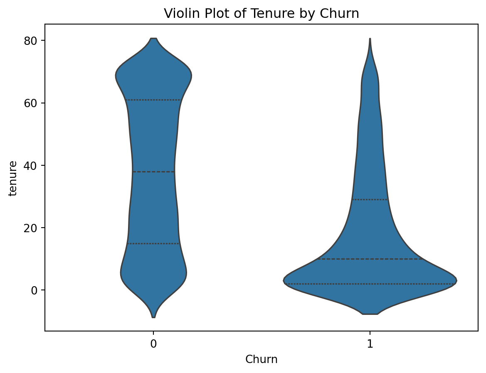
sns.histplot(data=telco_churn, x='AvgServiceUsageScore')
plt.title('Histogram of Average Service Usage Score')
plt.show();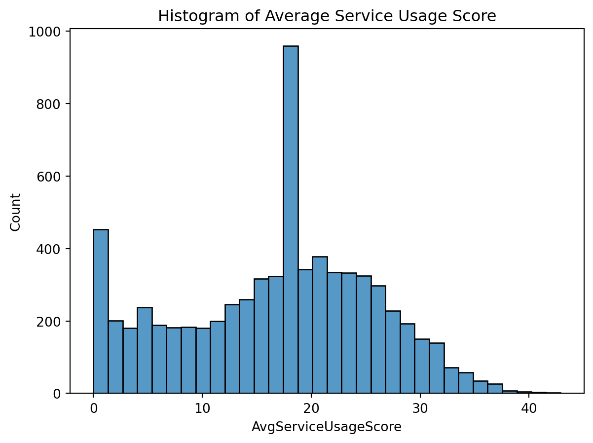
sns.histplot(data=telco_churn, x='MonthlyCharges')
plt.title('Histogram of Monthly Charges')
plt.show();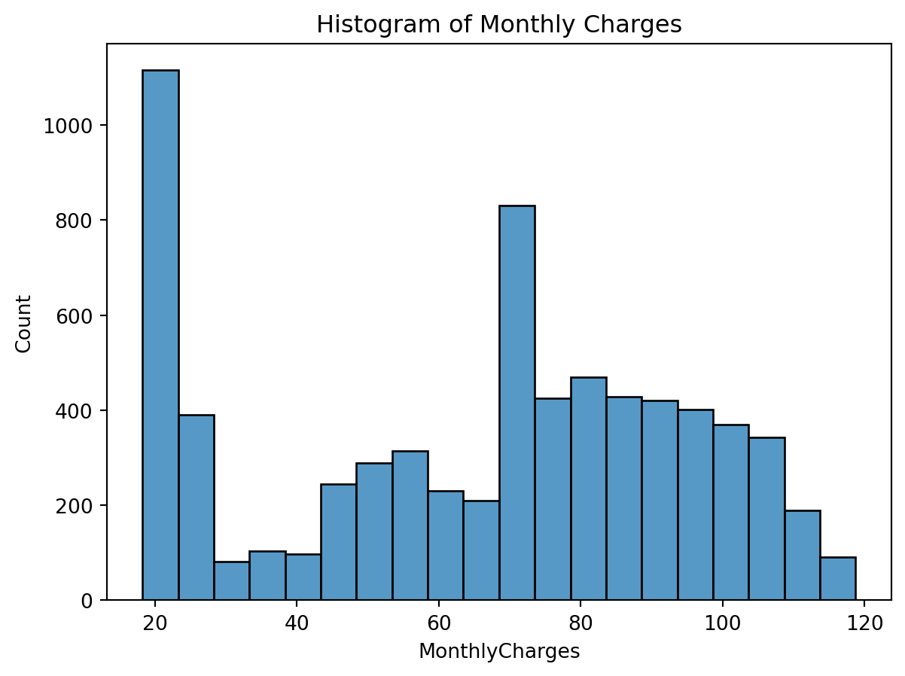
sns.scatterplot(data=telco_churn, x='AvgServiceUsageScore', y='MonthlyCharges')
plt.title('Average Service Usage Score vs. Monthly Charges')
plt.show();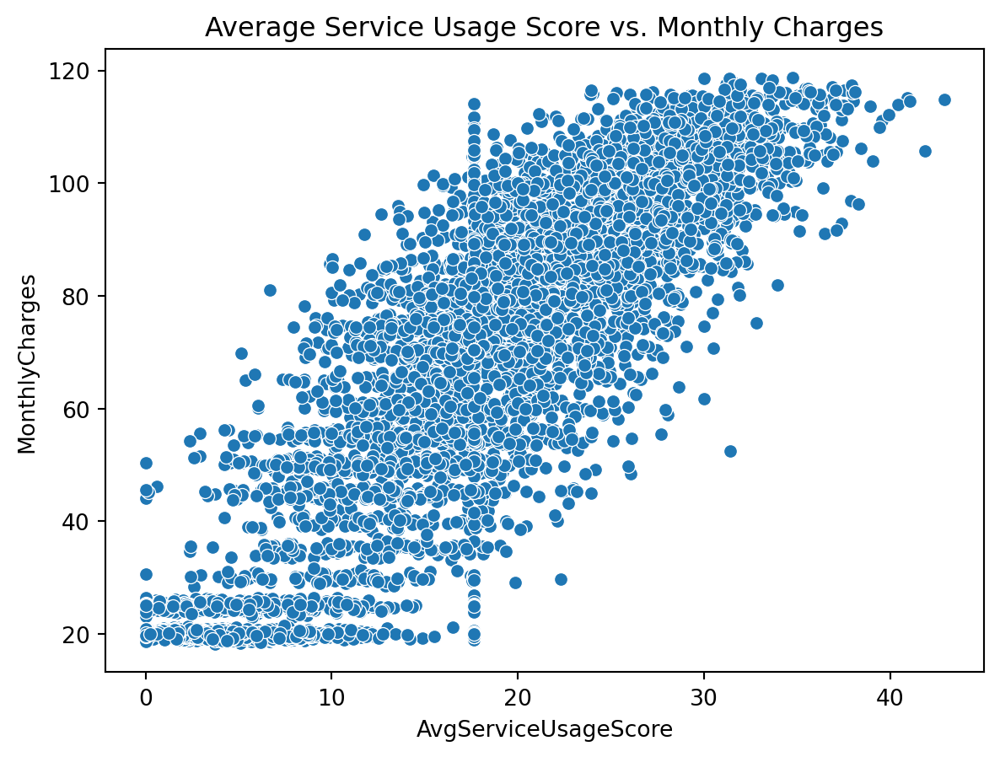
sns.countplot(data=telco_churn, x='InternetService', hue='Churn')
plt.title('Churn Rate by Internet Service Type')
plt.show();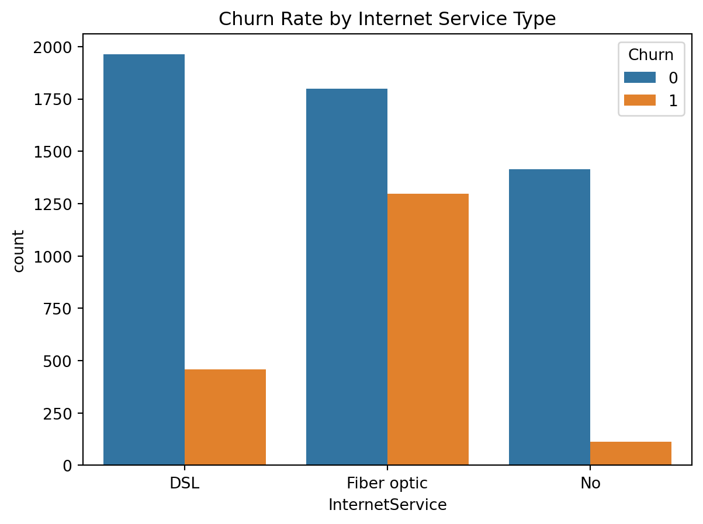
Exercise #2: Exploring and Preprocessing Data with Pandas & Seaborn
Inspect a dataset using Pandas
# Inspect data structure
marketing_campaign_raw
marketing_campaign_raw.info()| ID | Year_Birth | Education | Marital_Status | Income | Kidhome | Teenhome | Dt_Customer | Recency | MntWines | MntFruits | MntMeatProducts | MntFishProducts | MntSweetProducts | MntGoldProds | NumDealsPurchases | NumWebPurchases | NumCatalogPurchases | NumStorePurchases | NumWebVisitsMonth | AcceptedCmp3 | AcceptedCmp4 | AcceptedCmp5 | AcceptedCmp1 | AcceptedCmp2 | Complain | Response | TotalChildren | TotalSpent | |
|---|---|---|---|---|---|---|---|---|---|---|---|---|---|---|---|---|---|---|---|---|---|---|---|---|---|---|---|---|---|
| 0 | 5524 | 1957 | Graduation | Single | 58138.0 | 0 | 0 | 2012-09-04 | 58 | 635 | 88 | 546 | 172 | 88 | 88 | 3 | 8 | 10 | 4 | 7 | 0 | 0 | 0 | 0 | 0 | 0 | 1 | 0 | 1617 |
| 1 | 2174 | 1954 | Graduation | Single | 46344.0 | 1 | 1 | 2014-03-08 | 38 | 11 | 1 | 6 | 2 | 1 | 6 | 2 | 1 | 1 | 2 | 5 | 0 | 0 | 0 | 0 | 0 | 0 | 0 | 2 | 27 |
| 2 | 4141 | 1965 | Graduation | Together | 71613.0 | 0 | 0 | 2013-08-21 | 26 | 426 | 49 | 127 | 111 | 21 | 42 | 1 | 8 | 2 | 10 | 4 | 0 | 0 | 0 | 0 | 0 | 0 | 0 | 0 | 776 |
| 3 | 6182 | 1984 | Graduation | Together | 26646.0 | 1 | 0 | 2014-02-10 | 26 | 11 | 4 | 20 | 10 | 3 | 5 | 2 | 2 | 0 | 4 | 6 | 0 | 0 | 0 | 0 | 0 | 0 | 0 | 1 | 53 |
| 4 | 5324 | 1981 | PhD | Married | 58293.0 | 1 | 0 | 2014-01-19 | 94 | 173 | 43 | 118 | 46 | 27 | 15 | 5 | 5 | 3 | 6 | 5 | 0 | 0 | 0 | 0 | 0 | 0 | 0 | 1 | 422 |
| ... | ... | ... | ... | ... | ... | ... | ... | ... | ... | ... | ... | ... | ... | ... | ... | ... | ... | ... | ... | ... | ... | ... | ... | ... | ... | ... | ... | ... | ... |
| 2235 | 10870 | 1967 | Graduation | Married | 61223.0 | 0 | 1 | 2013-06-13 | 46 | 709 | 43 | 182 | 42 | 118 | 247 | 2 | 9 | 3 | 4 | 5 | 0 | 0 | 0 | 0 | 0 | 0 | 0 | 1 | 1341 |
| 2236 | 4001 | 1946 | PhD | Together | 64014.0 | 2 | 1 | 2014-06-10 | 56 | 406 | 0 | 30 | 0 | 0 | 8 | 7 | 8 | 2 | 5 | 7 | 0 | 0 | 0 | 1 | 0 | 0 | 0 | 3 | 444 |
| 2237 | 7270 | 1981 | Graduation | Divorced | NaN | 0 | 0 | 2014-01-25 | 91 | 908 | 48 | 217 | 32 | 12 | 24 | 1 | 2 | 3 | 13 | 6 | 0 | 1 | 0 | 0 | 0 | 0 | 0 | 0 | 1241 |
| 2238 | 8235 | 1956 | Master | Together | 69245.0 | 0 | 1 | 2014-01-24 | 8 | 428 | 30 | 214 | 80 | 30 | 61 | 2 | 6 | 5 | 10 | 3 | 0 | 0 | 0 | 0 | 0 | 0 | 0 | 1 | 843 |
| 2239 | 9405 | 1954 | PhD | Married | 52869.0 | 1 | 1 | 2012-10-15 | 40 | 84 | 3 | 61 | 2 | 1 | 21 | 3 | 3 | 1 | 4 | 7 | 0 | 0 | 0 | 0 | 0 | 0 | 1 | 2 | 172 |
2240 rows × 29 columns
<class 'pandas.DataFrame'>
RangeIndex: 2240 entries, 0 to 2239
Data columns (total 29 columns):
# Column Non-Null Count Dtype
--- ------ -------------- -----
0 ID 2240 non-null int64
1 Year_Birth 2240 non-null int64
2 Education 2240 non-null str
3 Marital_Status 2240 non-null str
4 Income 1994 non-null float64
5 Kidhome 2240 non-null int64
6 Teenhome 2240 non-null int64
7 Dt_Customer 2240 non-null str
8 Recency 2240 non-null int64
9 MntWines 2240 non-null int64
10 MntFruits 2240 non-null int64
11 MntMeatProducts 2240 non-null int64
12 MntFishProducts 2240 non-null int64
13 MntSweetProducts 2240 non-null int64
14 MntGoldProds 2240 non-null int64
15 NumDealsPurchases 2240 non-null int64
16 NumWebPurchases 2240 non-null int64
17 NumCatalogPurchases 2240 non-null int64
18 NumStorePurchases 2240 non-null int64
19 NumWebVisitsMonth 2240 non-null int64
20 AcceptedCmp3 2240 non-null int64
21 AcceptedCmp4 2240 non-null int64
22 AcceptedCmp5 2240 non-null int64
23 AcceptedCmp1 2240 non-null int64
24 AcceptedCmp2 2240 non-null int64
25 Complain 2240 non-null int64
26 Response 2240 non-null int64
27 TotalChildren 2240 non-null int64
28 TotalSpent 2240 non-null int64
dtypes: float64(1), int64(25), str(3)
memory usage: 507.6 KB# Check for missing values
marketing_campaign_raw.isnull().sum()
# Check for duplicate rows
marketing_campaign_raw.duplicated().sum()ID 0
Year_Birth 0
Education 0
Marital_Status 0
Income 246
Kidhome 0
Teenhome 0
Dt_Customer 0
Recency 0
MntWines 0
MntFruits 0
MntMeatProducts 0
MntFishProducts 0
MntSweetProducts 0
MntGoldProds 0
NumDealsPurchases 0
NumWebPurchases 0
NumCatalogPurchases 0
NumStorePurchases 0
NumWebVisitsMonth 0
AcceptedCmp3 0
AcceptedCmp4 0
AcceptedCmp5 0
AcceptedCmp1 0
AcceptedCmp2 0
Complain 0
Response 0
TotalChildren 0
TotalSpent 0
dtype: int64np.int64(0)Handle missing values and clean data
# Create a clean working copy
marketing_campaign = marketing_campaign_raw.copy()
# Handle missing values of Income
marketing_campaign['Income'] = marketing_campaign['Income']\
.fillna(
marketing_campaign['Income'].median()
)
# Add new features
marketing_campaign["TotalChildren"] = marketing_campaign["Kidhome"] + marketing_campaign["Teenhome"]
marketing_campaign["TotalSpent"] = (
marketing_campaign["MntWines"] + marketing_campaign["MntFruits"] +
marketing_campaign["MntMeatProducts"] + marketing_campaign["MntFishProducts"] +
marketing_campaign["MntSweetProducts"] + marketing_campaign["MntGoldProds"]
)
# Convert to datetime
marketing_campaign["Dt_Customer"] = pd.to_datetime(marketing_campaign["Dt_Customer"], errors='coerce')
marketing_campaign.info()<class 'pandas.DataFrame'>
RangeIndex: 2240 entries, 0 to 2239
Data columns (total 29 columns):
# Column Non-Null Count Dtype
--- ------ -------------- -----
0 ID 2240 non-null int64
1 Year_Birth 2240 non-null int64
2 Education 2240 non-null str
3 Marital_Status 2240 non-null str
4 Income 2240 non-null float64
5 Kidhome 2240 non-null int64
6 Teenhome 2240 non-null int64
7 Dt_Customer 2240 non-null datetime64[us]
8 Recency 2240 non-null int64
9 MntWines 2240 non-null int64
10 MntFruits 2240 non-null int64
11 MntMeatProducts 2240 non-null int64
12 MntFishProducts 2240 non-null int64
13 MntSweetProducts 2240 non-null int64
14 MntGoldProds 2240 non-null int64
15 NumDealsPurchases 2240 non-null int64
16 NumWebPurchases 2240 non-null int64
17 NumCatalogPurchases 2240 non-null int64
18 NumStorePurchases 2240 non-null int64
19 NumWebVisitsMonth 2240 non-null int64
20 AcceptedCmp3 2240 non-null int64
21 AcceptedCmp4 2240 non-null int64
22 AcceptedCmp5 2240 non-null int64
23 AcceptedCmp1 2240 non-null int64
24 AcceptedCmp2 2240 non-null int64
25 Complain 2240 non-null int64
26 Response 2240 non-null int64
27 TotalChildren 2240 non-null int64
28 TotalSpent 2240 non-null int64
dtypes: datetime64[us](1), float64(1), int64(25), str(2)
memory usage: 507.6 KB# Summarize structure
marketing_campaign.describe(include='all')| ID | Year_Birth | Education | Marital_Status | Income | Kidhome | Teenhome | Dt_Customer | Recency | MntWines | MntFruits | MntMeatProducts | MntFishProducts | MntSweetProducts | MntGoldProds | NumDealsPurchases | NumWebPurchases | NumCatalogPurchases | NumStorePurchases | NumWebVisitsMonth | AcceptedCmp3 | AcceptedCmp4 | AcceptedCmp5 | AcceptedCmp1 | AcceptedCmp2 | Complain | Response | TotalChildren | TotalSpent | |
|---|---|---|---|---|---|---|---|---|---|---|---|---|---|---|---|---|---|---|---|---|---|---|---|---|---|---|---|---|---|
| count | 2240.000000 | 2240.000000 | 2240 | 2240 | 2240.000000 | 2240.000000 | 2240.000000 | 2240 | 2240.000000 | 2240.000000 | 2240.000000 | 2240.000000 | 2240.000000 | 2240.000000 | 2240.000000 | 2240.000000 | 2240.000000 | 2240.000000 | 2240.000000 | 2240.000000 | 2240.000000 | 2240.000000 | 2240.000000 | 2240.000000 | 2240.000000 | 2240.000000 | 2240.000000 | 2240.000000 | 2240.000000 |
| unique | NaN | NaN | 5 | 8 | NaN | NaN | NaN | NaN | NaN | NaN | NaN | NaN | NaN | NaN | NaN | NaN | NaN | NaN | NaN | NaN | NaN | NaN | NaN | NaN | NaN | NaN | NaN | NaN | NaN |
| top | NaN | NaN | Graduation | Married | NaN | NaN | NaN | NaN | NaN | NaN | NaN | NaN | NaN | NaN | NaN | NaN | NaN | NaN | NaN | NaN | NaN | NaN | NaN | NaN | NaN | NaN | NaN | NaN | NaN |
| freq | NaN | NaN | 1127 | 864 | NaN | NaN | NaN | NaN | NaN | NaN | NaN | NaN | NaN | NaN | NaN | NaN | NaN | NaN | NaN | NaN | NaN | NaN | NaN | NaN | NaN | NaN | NaN | NaN | NaN |
| mean | 5592.159821 | 1968.805804 | NaN | NaN | 51986.616071 | 0.444196 | 0.506250 | 2013-07-10 10:01:42.857142 | 49.109375 | 303.935714 | 26.302232 | 166.950000 | 37.525446 | 27.062946 | 44.021875 | 2.325000 | 4.084821 | 2.662054 | 5.790179 | 5.316518 | 0.072768 | 0.074554 | 0.072768 | 0.064286 | 0.013393 | 0.009375 | 0.149107 | 0.950446 | 605.798214 |
| min | 0.000000 | 1893.000000 | NaN | NaN | 1730.000000 | 0.000000 | 0.000000 | 2012-07-30 00:00:00 | 0.000000 | 0.000000 | 0.000000 | 0.000000 | 0.000000 | 0.000000 | 0.000000 | 0.000000 | 0.000000 | 0.000000 | 0.000000 | 0.000000 | 0.000000 | 0.000000 | 0.000000 | 0.000000 | 0.000000 | 0.000000 | 0.000000 | 0.000000 | 5.000000 |
| 25% | 2828.250000 | 1959.000000 | NaN | NaN | 36892.500000 | 0.000000 | 0.000000 | 2013-01-16 00:00:00 | 24.000000 | 23.750000 | 1.000000 | 16.000000 | 3.000000 | 1.000000 | 9.000000 | 1.000000 | 2.000000 | 0.000000 | 3.000000 | 3.000000 | 0.000000 | 0.000000 | 0.000000 | 0.000000 | 0.000000 | 0.000000 | 0.000000 | 0.000000 | 68.750000 |
| 50% | 5458.500000 | 1970.000000 | NaN | NaN | 51132.500000 | 0.000000 | 0.000000 | 2013-07-08 12:00:00 | 49.000000 | 173.500000 | 8.000000 | 67.000000 | 12.000000 | 8.000000 | 24.000000 | 2.000000 | 4.000000 | 2.000000 | 5.000000 | 6.000000 | 0.000000 | 0.000000 | 0.000000 | 0.000000 | 0.000000 | 0.000000 | 0.000000 | 1.000000 | 396.000000 |
| 75% | 8427.750000 | 1977.000000 | NaN | NaN | 65755.250000 | 1.000000 | 1.000000 | 2013-12-30 06:00:00 | 74.000000 | 504.250000 | 33.000000 | 232.000000 | 50.000000 | 33.000000 | 56.000000 | 3.000000 | 6.000000 | 4.000000 | 8.000000 | 7.000000 | 0.000000 | 0.000000 | 0.000000 | 0.000000 | 0.000000 | 0.000000 | 0.000000 | 1.000000 | 1045.500000 |
| max | 11191.000000 | 1996.000000 | NaN | NaN | 666666.000000 | 2.000000 | 2.000000 | 2014-06-29 00:00:00 | 99.000000 | 1493.000000 | 199.000000 | 1725.000000 | 259.000000 | 263.000000 | 362.000000 | 15.000000 | 27.000000 | 28.000000 | 13.000000 | 20.000000 | 1.000000 | 1.000000 | 1.000000 | 1.000000 | 1.000000 | 1.000000 | 1.000000 | 3.000000 | 2525.000000 |
| std | 3246.662198 | 11.984069 | NaN | NaN | 24229.835690 | 0.538398 | 0.544538 | NaN | 28.962453 | 336.597393 | 39.773434 | 225.715373 | 54.628979 | 41.280498 | 52.167439 | 1.932238 | 2.778714 | 2.923101 | 3.250958 | 2.426645 | 0.259813 | 0.262728 | 0.259813 | 0.245316 | 0.114976 | 0.096391 | 0.356274 | 0.751803 | 602.249288 |
Create visualizations to identify key business trends
sns.violinplot(data=marketing_campaign, x='Response', y='Income', inner='quartile')
plt.title('Violin Plot of Income by Campaign Response')
plt.show();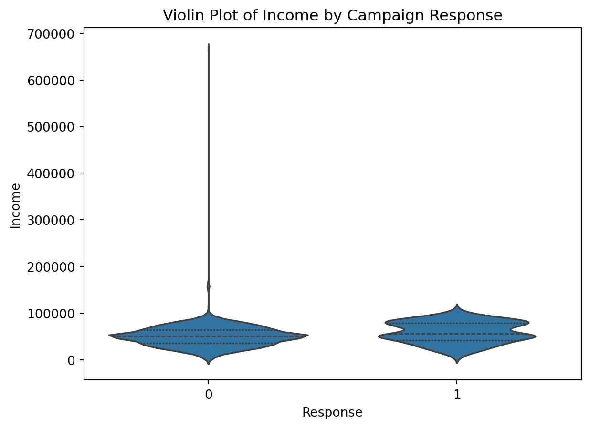
sns.histplot(data=marketing_campaign, x='TotalSpent')
plt.title('Histogram of Total Spent')
plt.show();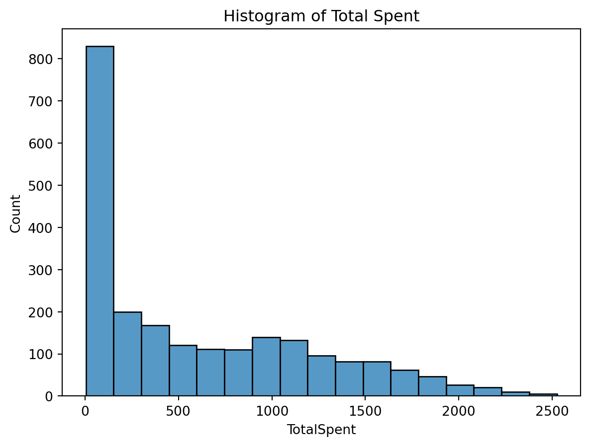
sns.scatterplot(data=marketing_campaign, x='Income', y='TotalSpent',
hue='Response', alpha=0.7)
plt.title('Income vs. Total Spent by Campaign Response')
plt.show();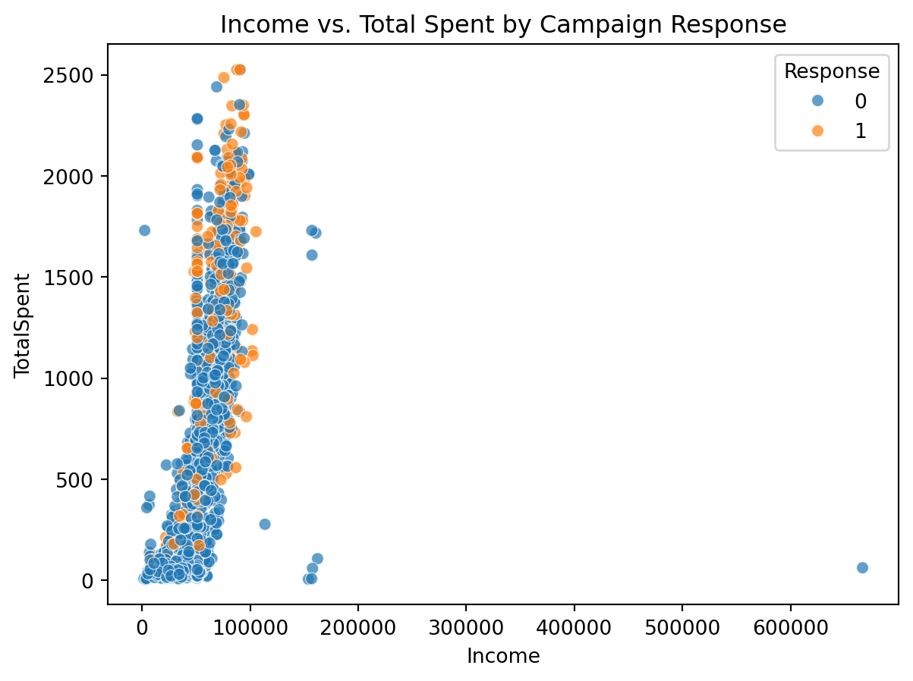
sns.countplot(data=marketing_campaign, x='Education', hue='Response')
plt.title('Campaign Response by Education Level')
#plt.xticks(rotation=30)
plt.show();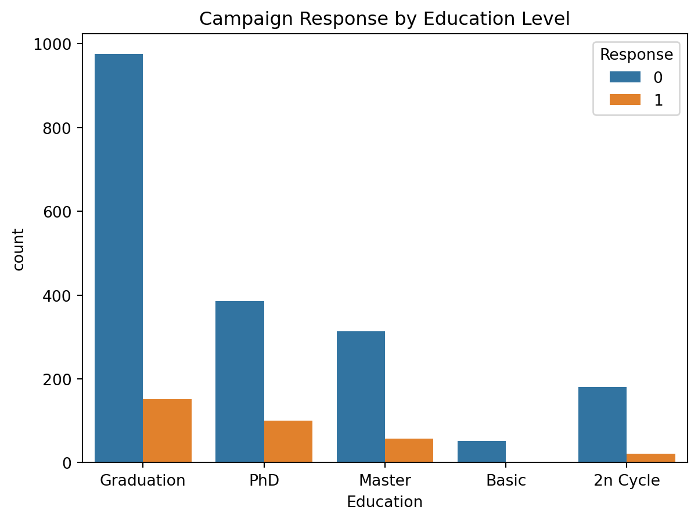
Interpretation Questions
- Looking at the violin plot of Income by Response, which group (responders or non-responders) shows more variability in income?
- Based on your scatter plot, do higher-income customers tend to spend more? Is this relationship strong or weak?
- Which education level shows the highest response rate? What marketing implications might this have?
Module 2: Supervised Learning for Business Decisions
Walkthrough #3: Build a Regression Model for Pricing Optimization
Split the data into training and validation sets
X = telco_churn[['AvgServiceUsageScore']] # predictor
y = telco_churn['MonthlyCharges'] # target
# Reset index to avoid potential issues later
X = X.reset_index(drop=True)
y = y.reset_index(drop=True)
# Best practice when working with linear models
scaler = StandardScaler()
X_scaled = scaler.fit_transform(X)
X_train, X_val, y_train, y_val = train_test_split(
X_scaled, y, test_size=0.2, random_state=2025
)Train a linear regression model
lr = LinearRegression()
lr.fit(X_train, y_train)
print(f"Intercept: {lr.intercept_:.2f}")
print(f"Coefficient (usage_scaled → price): {lr.coef_[0]:.2f}")LinearRegression()In a Jupyter environment, please rerun this cell to show the HTML representation or trust the notebook.
On GitHub, the HTML representation is unable to render, please try loading this page with nbviewer.org.
Parameters
Intercept: 64.88
Coefficient (usage_scaled → price): 25.85Evaluate model performance on the validation set
y_pred = lr.predict(X_val)
r2 = r2_score(y_val, y_pred)
mae = mean_absolute_error(y_val, y_pred)
print(f"R-squared: {r2:.2f}")
print(f"Mean Absolute Error: {mae:.2f}")R-squared: 0.80
Mean Absolute Error: 8.25Exercise #3: Build a Regression Model for Pricing Optimization
Split the data into training and validation sets
# Predictor and target
X_m = marketing_campaign[['Income']] # predictor
y_m = marketing_campaign['TotalSpent'] # target
# Reset index to avoid potential issues later
X_m = X_m.reset_index(drop=True)
y_m = y_m.reset_index(drop=True)
# Standardize the predictor
scaler_m = StandardScaler()
X_m_scaled = scaler_m.fit_transform(X_m)
# Train-test split
X_m_train, X_m_val, y_m_train, y_m_val = train_test_split(
X_m_scaled, y_m, test_size=0.2, random_state=2025
)Train a linear regression model
lr_m = LinearRegression()
lr_m.fit(X_m_train, y_m_train)
print(f"Intercept: {lr_m.intercept_:.2f}")
print(f"Coefficient (Income_scaled → TotalSpent): {lr_m.coef_[0]:.2f}")LinearRegression()In a Jupyter environment, please rerun this cell to show the HTML representation or trust the notebook.
On GitHub, the HTML representation is unable to render, please try loading this page with nbviewer.org.
Parameters
Intercept: 610.82
Coefficient (Income_scaled → TotalSpent): 349.61Evaluate model performance on the validation set
y_m_pred = lr_m.predict(X_m_val)
r2_m = r2_score(y_m_val, y_m_pred)
mae_m = mean_absolute_error(y_m_val, y_m_pred)
print(f"R-squared: {r2_m:.2f}")
print(f"Mean Absolute Error: {mae_m:.2f}")R-squared: 0.48
Mean Absolute Error: 323.76Interpretation Questions
- Is your R-squared higher or lower than the telco churn model? What might explain the difference?
- If MAE is $200, what does that mean in practical terms for predicting customer spending?
- Would you trust this model for making budget decisions? Why or why not?
Walkthrough #4: Implement a Classification Model for Customer Churn
Split the data into training and validation sets
# Select relevant features
features = ['tenure', 'SeniorCitizen', 'ServiceCount', 'InternetScore', 'AvgServiceUsageScore']
X = telco_churn[features]
y = telco_churn['Churn']
# Scaling is not as important for tree-based models since they are not sensitive to
# one feature having a larger scale than another
# Train-test split
X_train, X_test, y_train, y_test = train_test_split(X, y, test_size=0.2, random_state=2025)Train a Random Forest classification model
# Train Random Forest classifier
clf = RandomForestClassifier(n_estimators=100, random_state=2025)
clf.fit(X_train, y_train)RandomForestClassifier(random_state=2025)In a Jupyter environment, please rerun this cell to show the HTML representation or trust the notebook.
On GitHub, the HTML representation is unable to render, please try loading this page with nbviewer.org.
Parameters
Evaluate model performance on the validation set
y_pred = clf.predict(X_test)
print(f"Accuracy: {accuracy_score(y_test, y_pred):.2f}")
print(f"Precision: {precision_score(y_test, y_pred):.2f}")
print(f"Recall: {recall_score(y_test, y_pred):.2f}")
cm = confusion_matrix(y_test, y_pred)
labels = ['No Churn', 'Churn']
cm_telco_churn = pd.DataFrame(cm, index=labels, columns=labels)
print("\nConfusion Matrix (formatted):")
print(cm_telco_churn)Accuracy: 0.76
Precision: 0.54
Recall: 0.48
Confusion Matrix (formatted):
No Churn Churn
No Churn 907 146
Churn 186 170Quick Reference: When to Use Which Metric
| Situation | Metric | Why |
|---|---|---|
| Predicting continuous values | R², MAE | Measures prediction error |
| Balanced classes | Accuracy | Overall correctness |
| Cost of false positives is high | Precision | Minimize wrong positive predictions |
| Cost of false negatives is high | Recall | Catch all actual positives |
| Need balance | F1-Score | Harmonic mean of precision/recall |
Exercise #4: Implement a Classification Model for Customer Churn
Split the data into training and validation sets
# Select relevant features
features_m = ['Income', 'TotalSpent', 'TotalChildren']
X_m_class = marketing_campaign[features_m]
y_m_class = marketing_campaign['Response']
# Split into training and validation sets
X_m_train_class, X_m_val_class, y_m_train_class, y_m_val_class = train_test_split(
X_m_class, y_m_class, test_size=0.2, random_state=2025
)Train a Random Forest classification model
# Train Random Forest classifier
clf_m = RandomForestClassifier(n_estimators=100, random_state=2025)
clf_m.fit(X_m_train_class, y_m_train_class)RandomForestClassifier(random_state=2025)In a Jupyter environment, please rerun this cell to show the HTML representation or trust the notebook.
On GitHub, the HTML representation is unable to render, please try loading this page with nbviewer.org.
Parameters
Evaluate model performance on the validation set
y_m_pred_class = clf_m.predict(X_m_val_class)
print(f"Accuracy: {accuracy_score(y_m_val_class, y_m_pred_class):.2f}")
print(f"Precision: {precision_score(y_m_val_class, y_m_pred_class):.2f}")
print(f"Recall: {recall_score(y_m_val_class, y_m_pred_class):.2f}")
labels = ['No Response', 'Response']
cm_marketing_response = pd.DataFrame(confusion_matrix(y_m_val_class, y_m_pred_class),
index=labels, columns=labels)
print("\nConfusion Matrix (formatted):")
print(cm_marketing_response)Accuracy: 0.84
Precision: 0.27
Recall: 0.20
Confusion Matrix (formatted):
No Response Response
No Response 364 30
Response 43 11Interpretation Questions
- Compare your precision and recall. Which is higher, and what does that imply about the model’s tendencies?
- Looking at your confusion matrix, is the model better at identifying responders or non-responders?
- If running a marketing campaign costs $50 per contact, which metric matters more: precision or recall?
Module 3: Unsupervised Learning and Pattern Discovery in Business
Walkthrough #5: Exploring K-Means Clustering for Customer Segmentation
Apply K-Means clustering to segment customers
# Select relevant features
telco_churn['ContractType'] = telco_churn['Contract'].map({
'Month-to-month': 0, 'One year': 1, 'Two year': 2
})
features = ['tenure', 'ServiceCount', 'AvgServiceUsageScore', 'MonthlyCharges', 'InternetScore', 'ContractType']
X = telco_churn[features]
# Standardize features
scaler = StandardScaler()
X_scaled = scaler.fit_transform(X)Determine the optimal number of clusters using the Elbow Method
inertia = []
k_range = range(1, 11)
for k in k_range:
kmeans = KMeans(n_clusters=k, random_state=2025)
kmeans.fit(X_scaled)
inertia.append(kmeans.inertia_)
plt.plot(k_range, inertia, marker='o')
plt.xlabel('Number of clusters (k)')
plt.ylabel('Inertia')
plt.title('Elbow Method for Optimal k')
plt.show();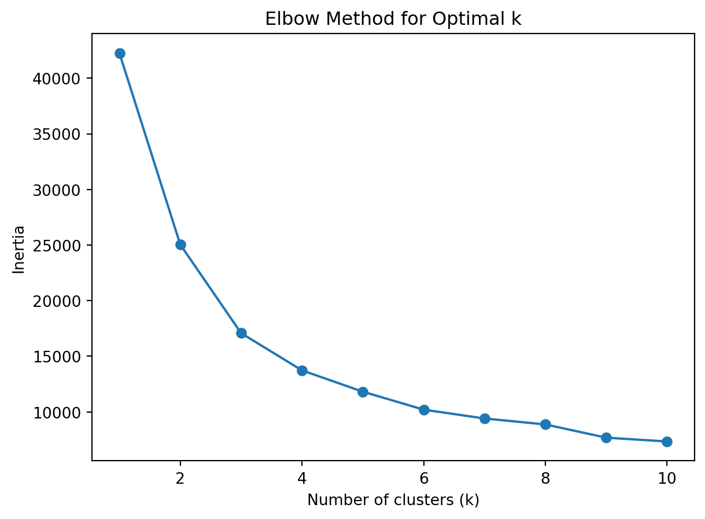
Verify using the silhouette score (optional but recommended)
# Evaluate silhouette scores for k=3 to k=6
silhouette_scores = {}
for k in range(3, 7):
kmeans = KMeans(n_clusters=k, random_state=2025)
labels = kmeans.fit_predict(X_scaled)
score = silhouette_score(X_scaled, labels)
silhouette_scores[k] = score
silhouette_scores{3: 0.359378998600167,
4: 0.3426379222067103,
5: 0.335649047934005,
6: 0.32896586148507484}Fit K-means and assign cluster labels to each customer
# Let's assume the elbow suggested k=3
optimal_k = 3
kmeans = KMeans(n_clusters=optimal_k, random_state=2025)
telco_churn['Cluster'] = kmeans.fit_predict(X_scaled)Visualize customer segments using a 2D plot
# Visualize clusters in 2D space (using tenure and MonthlyCharges)
sns.scatterplot(data=telco_churn, x='tenure', y='AvgServiceUsageScore',
hue='Cluster', palette='viridis')
plt.title('Customer Segments via K-Means')
plt.show();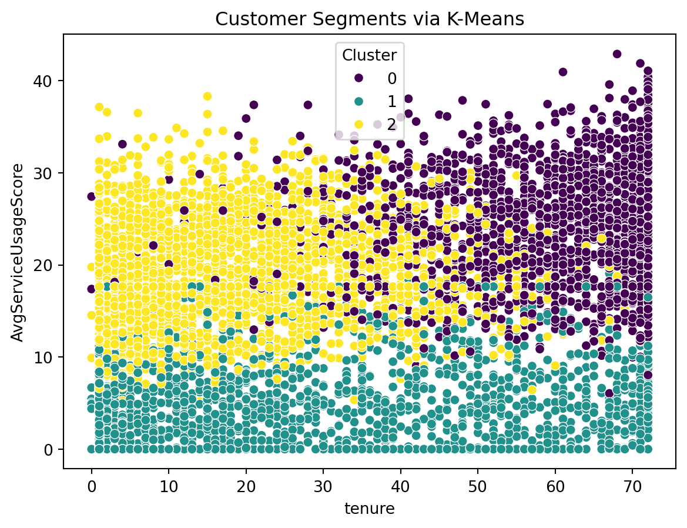
Exercise #5: Exploring K-Means Clustering for Customer Segmentation
Apply K-Means clustering to segment customers
# Select relevant features
features_cluster = ['Income', 'TotalSpent', 'TotalChildren']
X_cluster = marketing_campaign[features_cluster]
# Standardize features
scaler = StandardScaler()
X_cluster_scaled = scaler.fit_transform(X_cluster)Determine the optimal number of clusters using the Elbow Method
inertia = []
k_range = range(1, 11)
for k in k_range:
kmeans = KMeans(n_clusters=k, random_state=2025)
kmeans.fit(X_cluster_scaled)
inertia.append(kmeans.inertia_)
plt.plot(k_range, inertia, marker='o')
plt.xlabel('Number of clusters (k)')
plt.ylabel('Inertia')
plt.title('Elbow Method for Optimal k')
plt.show();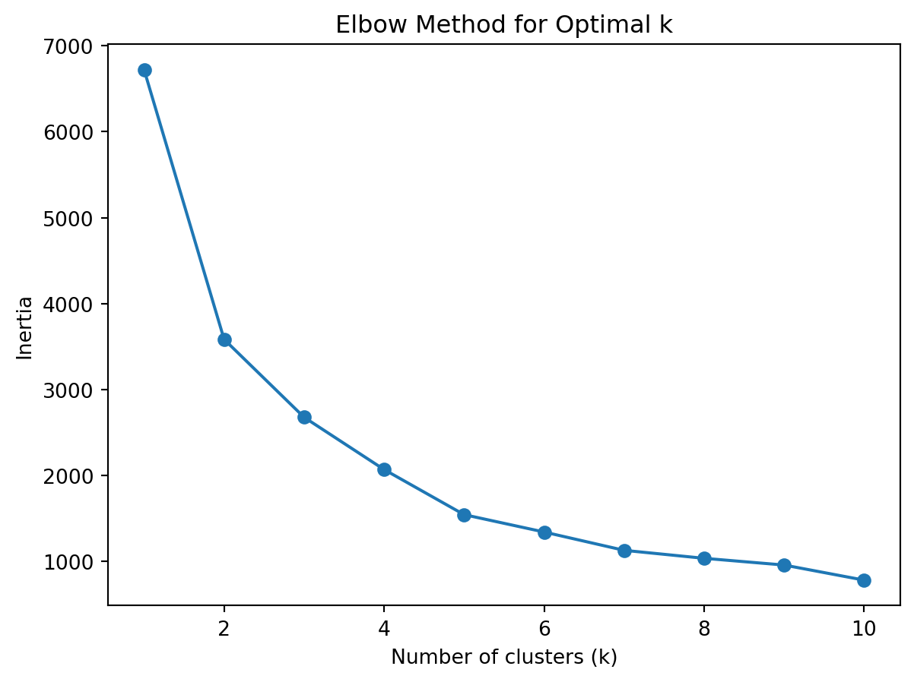
Verify using the silhouette score (optional but recommended)
silhouette_scores = {}
for k in range(3, 7):
kmeans = KMeans(n_clusters=k, random_state=2025)
labels = kmeans.fit_predict(X_cluster_scaled)
score = silhouette_score(X_cluster_scaled, labels)
silhouette_scores[k] = score
silhouette_scores{3: 0.4347244975124846,
4: 0.4383664875381715,
5: 0.4433585654203904,
6: 0.42910667544920855}Fit K-means and assign cluster labels to each customer
# Assume optimal k is 5 (can be adjusted based on elbow or silhouette)
optimal_k = 5
kmeans_final = KMeans(n_clusters=optimal_k, random_state=2025)
marketing_campaign['Cluster'] = kmeans_final.fit_predict(X_cluster_scaled)Visualize customer segments using a 2D plot
import matplotlib.ticker as ticker
sns.scatterplot(data=marketing_campaign, x='TotalChildren', y='TotalSpent',
hue='Cluster', palette='viridis')
plt.title('Customer Segments via K-Means Clustering')
# Set x-axis to integer ticks only
plt.gca().xaxis.set_major_locator(ticker.MultipleLocator(1))
plt.show();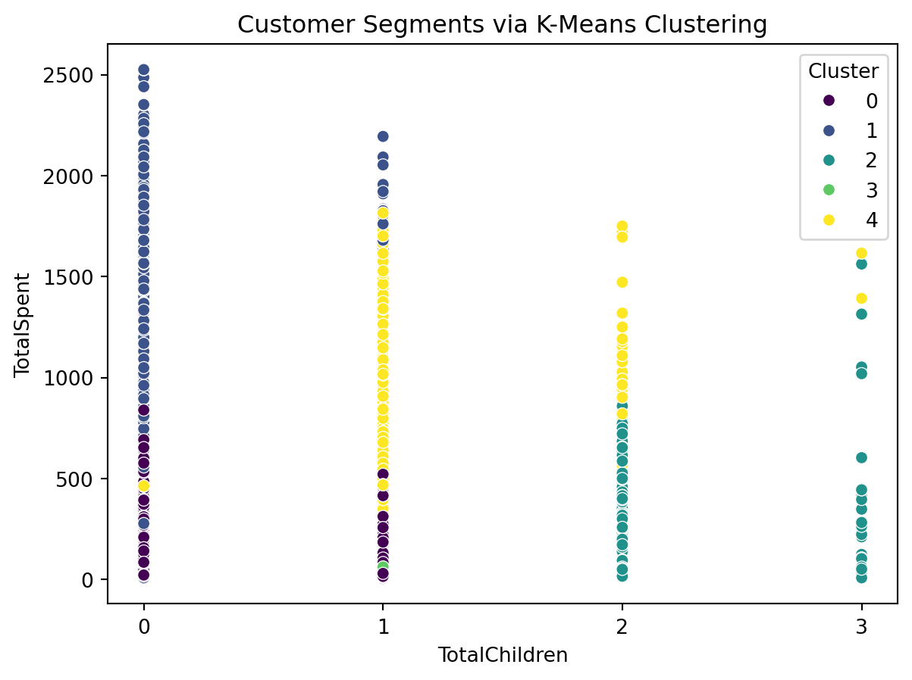
Interpretation Questions
- How did you decide on the optimal k? Did the elbow method and silhouette scores agree?
- Looking at your 2D visualization, do the clusters seem well-separated or do they overlap?
- Can you describe what “type” of customer each cluster might represent based on their TotalChildren and TotalSpent values?
Walkthrough #6: Market Basket Analysis with Apriori Algorithm
Prepare transactional data (services as items)
# Selecting binary service columns to act like "products"
service_cols = [
'OnlineSecurity', 'OnlineBackup', 'DeviceProtection',
'TechSupport', 'StreamingTV', 'StreamingMovies', 'PhoneService'
]
# Convert service columns to boolean (preference of apriori() function)
telco_churn_basket = telco_churn[service_cols].astype(bool)
telco_churn_basket| OnlineSecurity | OnlineBackup | DeviceProtection | TechSupport | StreamingTV | StreamingMovies | PhoneService | |
|---|---|---|---|---|---|---|---|
| 0 | False | True | False | False | False | False | False |
| 1 | True | False | True | False | False | False | True |
| 2 | True | True | False | False | False | False | True |
| 3 | True | False | True | True | False | False | False |
| 4 | False | False | False | False | False | False | True |
| ... | ... | ... | ... | ... | ... | ... | ... |
| 7038 | True | False | True | True | True | True | True |
| 7039 | False | True | True | False | True | True | True |
| 7040 | True | False | False | False | False | False | False |
| 7041 | False | False | False | False | False | False | True |
| 7042 | True | False | True | True | True | True | True |
7043 rows × 7 columns
Apply the Apriori algorithm to identify frequent itemsets
frequent_itemsets = apriori(telco_churn_basket, min_support=0.2, use_colnames=True)
frequent_itemsets| support | itemsets | |
|---|---|---|
| 0 | 0.286668 | frozenset({OnlineSecurity}) |
| 1 | 0.344881 | frozenset({OnlineBackup}) |
| 2 | 0.343888 | frozenset({DeviceProtection}) |
| 3 | 0.290217 | frozenset({TechSupport}) |
| 4 | 0.384353 | frozenset({StreamingTV}) |
| 5 | 0.387903 | frozenset({StreamingMovies}) |
| 6 | 0.903166 | frozenset({PhoneService}) |
| 7 | 0.246486 | frozenset({PhoneService, OnlineSecurity}) |
| 8 | 0.304132 | frozenset({PhoneService, OnlineBackup}) |
| 9 | 0.222490 | frozenset({DeviceProtection, StreamingTV}) |
| 10 | 0.226466 | frozenset({DeviceProtection, StreamingMovies}) |
| 11 | 0.300582 | frozenset({DeviceProtection, PhoneService}) |
| 12 | 0.249184 | frozenset({PhoneService, TechSupport}) |
| 13 | 0.275451 | frozenset({StreamingMovies, StreamingTV}) |
| 14 | 0.343888 | frozenset({PhoneService, StreamingTV}) |
| 15 | 0.345591 | frozenset({PhoneService, StreamingMovies}) |
| 16 | 0.200057 | frozenset({DeviceProtection, StreamingMovies, ... |
| 17 | 0.247054 | frozenset({PhoneService, StreamingMovies, Stre... |
Generate association rules from frequent itemsets
rules = association_rules(frequent_itemsets, metric="confidence", min_threshold=0.6)
rules = rules[['antecedents', 'consequents', 'support', 'confidence', 'lift']]
rules| antecedents | consequents | support | confidence | lift | |
|---|---|---|---|---|---|
| 0 | frozenset({OnlineSecurity}) | frozenset({PhoneService}) | 0.246486 | 0.859832 | 0.952019 |
| 1 | frozenset({OnlineBackup}) | frozenset({PhoneService}) | 0.304132 | 0.881844 | 0.976392 |
| 2 | frozenset({DeviceProtection}) | frozenset({StreamingTV}) | 0.222490 | 0.646986 | 1.683311 |
| 3 | frozenset({DeviceProtection}) | frozenset({StreamingMovies}) | 0.226466 | 0.658547 | 1.697710 |
| 4 | frozenset({DeviceProtection}) | frozenset({PhoneService}) | 0.300582 | 0.874071 | 0.967785 |
| 5 | frozenset({TechSupport}) | frozenset({PhoneService}) | 0.249184 | 0.858611 | 0.950667 |
| 6 | frozenset({StreamingMovies}) | frozenset({StreamingTV}) | 0.275451 | 0.710102 | 1.847526 |
| 7 | frozenset({StreamingTV}) | frozenset({StreamingMovies}) | 0.275451 | 0.716661 | 1.847526 |
| 8 | frozenset({StreamingTV}) | frozenset({PhoneService}) | 0.343888 | 0.894717 | 0.990645 |
| 9 | frozenset({StreamingMovies}) | frozenset({PhoneService}) | 0.345591 | 0.890922 | 0.986443 |
| 10 | frozenset({DeviceProtection, StreamingMovies}) | frozenset({PhoneService}) | 0.200057 | 0.883386 | 0.978099 |
| 11 | frozenset({DeviceProtection, PhoneService}) | frozenset({StreamingMovies}) | 0.200057 | 0.665564 | 1.715802 |
| 12 | frozenset({PhoneService, StreamingMovies}) | frozenset({StreamingTV}) | 0.247054 | 0.714873 | 1.859936 |
| 13 | frozenset({PhoneService, StreamingTV}) | frozenset({StreamingMovies}) | 0.247054 | 0.718415 | 1.852047 |
| 14 | frozenset({StreamingMovies, StreamingTV}) | frozenset({PhoneService}) | 0.247054 | 0.896907 | 0.993070 |
| 15 | frozenset({StreamingMovies}) | frozenset({PhoneService, StreamingTV}) | 0.247054 | 0.636896 | 1.852047 |
| 16 | frozenset({StreamingTV}) | frozenset({PhoneService, StreamingMovies}) | 0.247054 | 0.642778 | 1.859936 |
Exercise #6: Market Basket Analysis with Apriori Algorithm
Prepare transactional data (product categories as items)
# Select binary columns representing product purchases
product_cols = [
'MntWines', 'MntFruits', 'MntMeatProducts',
'MntFishProducts', 'MntSweetProducts', 'MntGoldProds'
]
# Convert product columns to binary: 1 if any amount was spent, else 0
basket = marketing_campaign[product_cols].map(lambda x: 1 if x > 0 else 0)
# Rename columns for cleaner output
basket.columns = [
'Wines', 'Fruits', 'Meat', 'Fish', 'Sweets', 'Gold'
]
basket = basket.astype(bool)
basket.head()| Wines | Fruits | Meat | Fish | Sweets | Gold | |
|---|---|---|---|---|---|---|
| 0 | True | True | True | True | True | True |
| 1 | True | True | True | True | True | True |
| 2 | True | True | True | True | True | True |
| 3 | True | True | True | True | True | True |
| 4 | True | True | True | True | True | True |
Apply the Apriori algorithm to identify frequent itemsets
frequent_itemsets = apriori(basket, min_support=0.2, use_colnames=True)
frequent_itemsets.sort_values(by='support', ascending=False)| support | itemsets | |
|---|---|---|
| 2 | 0.999554 | frozenset({Meat}) |
| 0 | 0.994196 | frozenset({Wines}) |
| 7 | 0.994196 | frozenset({Meat, Wines}) |
| 5 | 0.972768 | frozenset({Gold}) |
| 17 | 0.972321 | frozenset({Gold, Meat}) |
| ... | ... | ... |
| 44 | 0.656696 | frozenset({Fish, Fruits, Sweets, Wines}) |
| 54 | 0.650000 | frozenset({Gold, Fish, Fruits, Sweets}) |
| 61 | 0.650000 | frozenset({Gold, Sweets, Meat, Fish, Fruits}) |
| 59 | 0.646875 | frozenset({Wines, Gold, Sweets, Fish, Fruits}) |
| 62 | 0.646875 | frozenset({Wines, Gold, Sweets, Meat, Fish, Fr... |
63 rows × 2 columns
Generate association rules from frequent itemsets
rules = association_rules(frequent_itemsets, metric="confidence", min_threshold=0.6)
rules = rules[['antecedents', 'consequents', 'support', 'confidence', 'lift']]
rules = rules.sort_values(by='lift', ascending=False)
rules.reset_index(drop=True, inplace=True)
rules| antecedents | consequents | support | confidence | lift | |
|---|---|---|---|---|---|
| 0 | frozenset({Gold, Sweets, Wines}) | frozenset({Fish, Fruits}) | 0.646875 | 0.816338 | 1.109586 |
| 1 | frozenset({Fish, Fruits}) | frozenset({Gold, Meat, Sweets, Wines}) | 0.646875 | 0.879248 | 1.109586 |
| 2 | frozenset({Gold, Sweets, Wines}) | frozenset({Fish, Meat, Fruits}) | 0.646875 | 0.816338 | 1.109586 |
| 3 | frozenset({Fish, Meat, Fruits}) | frozenset({Gold, Sweets, Wines}) | 0.646875 | 0.879248 | 1.109586 |
| 4 | frozenset({Fish, Fruits}) | frozenset({Gold, Sweets, Wines}) | 0.646875 | 0.879248 | 1.109586 |
| ... | ... | ... | ... | ... | ... |
| 597 | frozenset({Fish, Sweets}) | frozenset({Wines}) | 0.727679 | 0.992692 | 0.998487 |
| 598 | frozenset({Meat, Wines}) | frozenset({Gold, Fish, Sweets}) | 0.714286 | 0.718455 | 0.998350 |
| 599 | frozenset({Gold, Fish, Sweets}) | frozenset({Wines}) | 0.714286 | 0.992556 | 0.998350 |
| 600 | frozenset({Wines}) | frozenset({Gold, Fish, Sweets}) | 0.714286 | 0.718455 | 0.998350 |
| 601 | frozenset({Gold, Fish, Sweets}) | frozenset({Meat, Wines}) | 0.714286 | 0.992556 | 0.998350 |
602 rows × 5 columns
Interpretation Questions
- Which product category appears in the most frequent itemsets? What does this suggest about purchasing patterns?
- Find a rule with high confidence but low lift. Why might this rule be less useful despite high confidence?
- Identify one actionable insight: what product bundle would you recommend based on these rules?
Module 4: Implementing and Evaluating ML Models
Walkthrough #7: Exploring Cross-Validation for Model Evaluation
Split data into training and validation sets
# Features and target
X = telco_churn[['AvgServiceUsageScore', 'tenure', 'MonthlyCharges']]
y = telco_churn['Churn']
# Scale the features since logistic regression is a linear model
scaler = StandardScaler()
X_scaled = scaler.fit_transform(X)
# Split into train and test sets (80% train, 20% test)
X_train, X_test, y_train, y_test = train_test_split(
X_scaled, y, test_size=0.2, random_state=2025
)Train a classification model using logistic regression
# Initialize logistic regression model
logreg = LogisticRegression(max_iter=1000, solver='liblinear')Apply k-fold cross-validation to evaluate model performance
# Cross-validate with multiple metrics
cv_results = cross_validate(
logreg,
X_train,
y_train,
cv=5,
scoring=['accuracy', 'precision', 'recall', 'f1'],
return_train_score=True
)Compare metrics across folds
def show_metric(name, results):
scores = results[f"test_{name}"]
print(f"{name.capitalize()}: {scores.mean():.3f} ± {scores.std():.3f}")
# Average performance across folds
for metric in ['accuracy', 'precision', 'recall', 'f1']:
show_metric(metric, cv_results)Accuracy: 0.782 ± 0.008
Precision: 0.632 ± 0.021
Recall: 0.447 ± 0.020
F1: 0.524 ± 0.018Interpretation
Accuracy → Overall correctness of predictions
Precision → How many predicted churns were actual churns
Recall → How many churns were correctly identified
F1-Score → Balances precision & recall
Cross-validation ensures that your model generalizes better to unseen data by reducing the risk of overfitting on a single split.
Exercise #7: Exploring Cross-Validation for Model Evaluation
Split data into training and validation sets
# Features and target
X_m = marketing_campaign[['Income', 'TotalSpent', 'TotalChildren']]
y_m = marketing_campaign['Response']
# Scale features
scaler = StandardScaler()
X_m_scaled = scaler.fit_transform(X_m)
# Train-test split
X_m_train, X_m_test, y_m_train, y_m_test = train_test_split(
X_m_scaled, y_m, test_size=0.2, random_state=2025
)Train a classification model using logistic regression
# Initialize logistic regression model
logreg_m = LogisticRegression(max_iter=1000, solver='liblinear')Apply k-fold cross-validation to evaluate model performance
# 5-fold cross-validation with multiple metrics
cv_results_m = cross_validate(
logreg_m,
X_m_train,
y_m_train,
cv=5,
scoring=['accuracy', 'precision', 'recall', 'f1'],
return_train_score=True
)Compare metrics across folds
# Average performance across folds
for m in ["accuracy", "precision", "recall", "f1"]:
show_metric(m, cv_results_m)Accuracy: 0.843 ± 0.010
Precision: 0.443 ± 0.364
Recall: 0.032 ± 0.029
F1: 0.060 ± 0.053Interpretation
Accuracy → Overall correctness of predictions
Precision → How many predicted responders were actual responders
Recall → How many actual responders were correctly identified
F1-Score → Harmonic mean of precision and recall
Interpretation Questions
- How consistent are your metrics across folds? (Look at the ± values)
- Which metric shows the most variability? What might cause this?
- Compare your cross-validation results to the single train-test split in Exercise #4. Are they similar?
Walkthrough #8: Hyperparameter Tuning with Grid Search
Train a Random Forest classifier
# Features and target
X = telco_churn[['AvgServiceUsageScore', 'tenure', 'MonthlyCharges']]
y = telco_churn['Churn']
# Initialize Random Forest
rf = RandomForestClassifier(random_state=2025)Apply grid search to find optimal hyperparameters
# Define the hyperparameter grid
param_grid = {
'n_estimators': [100, 200],
'max_depth': [4, 8],
'min_samples_split': [2, 5],
'min_samples_leaf': [1, 2]
}
# GridSearchCV setup
grid_search = GridSearchCV(
estimator=rf,
param_grid=param_grid,
cv=5,
scoring='recall',
n_jobs=-1,
verbose=1
)
# Run grid search
grid_search.fit(X, y)Fitting 5 folds for each of 16 candidates, totalling 80 fitsGridSearchCV(cv=5, estimator=RandomForestClassifier(random_state=2025),
n_jobs=-1,
param_grid={'max_depth': [4, 8], 'min_samples_leaf': [1, 2],
'min_samples_split': [2, 5],
'n_estimators': [100, 200]},
scoring='recall', verbose=1)In a Jupyter environment, please rerun this cell to show the HTML representation or trust the notebook. On GitHub, the HTML representation is unable to render, please try loading this page with nbviewer.org.
Parameters
RandomForestClassifier(max_depth=8, min_samples_leaf=2, min_samples_split=5,
n_estimators=200, random_state=2025)Parameters
Evaluate model improvement using accuracy and recall
# Predict using the best model
best_rf = grid_search.best_estimator_
y_pred = best_rf.predict(X)
# Evaluate
print(f"Best Accuracy: {accuracy_score(y, y_pred):.3f}")
print(f"Best Recall: {recall_score(y, y_pred):.3f}")Best Accuracy: 0.817
Best Recall: 0.478Interpret the best hyperparameter combination
print("Best Parameters Found:", grid_search.best_params_)Best Parameters Found: {'max_depth': 8, 'min_samples_leaf': 2, 'min_samples_split': 5, 'n_estimators': 200}Exercise #8: Hyperparameter Tuning with Grid Search
Train a Random Forest classifier
# Features and target
X_m = marketing_campaign[['Income', 'TotalSpent', 'TotalChildren']]
y_m = marketing_campaign['Response']
# Initialize Random Forest
rf_m = RandomForestClassifier(random_state=2025)Apply grid search to find optimal hyperparameters
# Define the hyperparameter grid
param_grid_m = {
'n_estimators': [100, 200],
'max_depth': [4, 8],
'min_samples_split': [2, 5],
'min_samples_leaf': [1, 2]
}
# GridSearchCV setup
grid_search_m = GridSearchCV(
estimator=rf_m,
param_grid=param_grid_m,
cv=5,
scoring='recall',
n_jobs=-1,
verbose=1
)
# Run grid search
grid_search_m.fit(X_m, y_m)Fitting 5 folds for each of 16 candidates, totalling 80 fitsGridSearchCV(cv=5, estimator=RandomForestClassifier(random_state=2025),
n_jobs=-1,
param_grid={'max_depth': [4, 8], 'min_samples_leaf': [1, 2],
'min_samples_split': [2, 5],
'n_estimators': [100, 200]},
scoring='recall', verbose=1)In a Jupyter environment, please rerun this cell to show the HTML representation or trust the notebook. On GitHub, the HTML representation is unable to render, please try loading this page with nbviewer.org.
Parameters
RandomForestClassifier(max_depth=8, random_state=2025)
Parameters
Evaluate model improvement using accuracy and recall
# Predict using the best model
best_rf_m = grid_search_m.best_estimator_
y_m_pred = best_rf_m.predict(X_m)
# Evaluate
print(f"Best Accuracy: {accuracy_score(y_m, y_m_pred):.3f}")
print(f"Best Recall: {recall_score(y_m, y_m_pred):.3f}")Best Accuracy: 0.890
Best Recall: 0.287Interpret the best hyperparameter combination
print("Best Parameters Found:", grid_search_m.best_params_)Best Parameters Found: {'max_depth': 8, 'min_samples_leaf': 1, 'min_samples_split': 2, 'n_estimators': 100}Interpretation Questions
- Did hyperparameter tuning improve recall compared to the default model in Exercise #4?
- Look at the best parameters found. Are they at the edges of your grid (suggesting you should expand the search)?
- Was the computational cost of grid search worth the performance improvement?
Bonus Challenge: End-to-End ML Pipeline
If you finish early or want additional practice, try this integration challenge using the marketing_campaign data:
Goal: Build the best model to predict Response using everything you’ve learned.
Feature Engineering: Create at least one new feature beyond TotalChildren and TotalSpent (e.g., spending per child, years as customer from Dt_Customer)
Model Comparison: Train both Logistic Regression and Random Forest, use cross-validation to compare them fairly
Optimization: Use GridSearchCV on your better-performing model
Interpretation: Write 2-3 sentences explaining which model you’d recommend and why
This is open-ended. There’s no single right answer. The goal is to practice the full workflow.
# Your code here